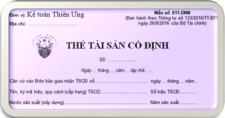

Hướng dẫn cách lập Thẻ Tải sản cố định theo Thông tư 133 và 200 – Mẫu S11-DNN (S23-DN), mục đích, Căn cứ và phương pháp ghi Thẻ TSCĐ. Theo dõi chi tiết từng TSCĐ của DN, tình hình thay đổi nguyên giá và giá trị hao mòn đã trích hàng năm của từng TSCĐ.
1. Mẫu Thẻ Tải sản cố định theo Thông tư 133:
|
Đơn vị: Kế toán Diệu Tâm Địa chỉ: …………………………... |
Mẫu số S11-DNN (Ban hành theo Thông tư số 133/2016/TT-BTC ngày 26/8/2016 của Bộ Tài chính) |
THẺ TÀI SẢN CỐ ĐỊNH
Số: ……………….
Ngày… tháng.... năm… lập thẻ……
Căn cứ vào Biên bản giao nhận TSCĐ số…………… ngày 15 tháng 09 năm 2026Số: ……………….
Ngày… tháng.... năm… lập thẻ……
Tên, ký mã hiệu, quy cách (cấp hạng) TSCD:…….…… Số hiệu TSCĐ…………
Nước sản xuất (xây dựng)……………………….. Năm sản xuất…………
Bộ phận quản lý, sử dụng……………… Năm đưa vào sử dụng……………
Công suất (diện tích thiết kế)……………………………………………………
Đình chỉ sử dụng TSCĐ ngày 15 tháng 09 năm 2026
Lý do đình chỉ……………………………………………………………
| Số hiệu chứng từ | Nguyên giá tài sản cố định | Giá trị hao mòn tài sản cố định | ||||
| Ngày, tháng, năm | Diễn giải | Nguyên giá | Năm | Giá trị hao mòn | Cộng dồn | |
| A | B | C | 1 | 2 | 3 | 4 |
|
|
||||||
Dụng cụ phụ tùng kèm theo:
| Số TT | Tên, quy cách dụng cụ, phụ tùng | Đơn vị tính | Số lượng | Giá trị |
| A | B | C | 1 | 2 |
|
|
Ghi giảm TSCĐ chứng từ số:………… ngày 15 tháng 09 năm 2026
Lý do giảm: …………………………………………………………………
|
Người lập biểu (Ký, họ tên) |
Kế toán trưởng (Ký, họ tên) |
Ngày 15 tháng 09 năm 2026 Người đại diện theo pháp luật (Ký, họ tên, đóng dấu) |
Ghi chú: Đối với trường hợp thuê dịch vụ làm kế toán, làm kế toán trưởng thì phải ghi rõ số Giấy chứng nhận đăng ký hành nghề dịch vụ kế toán, tên đơn vị cung cấp dịch vụ kế toán.
Tải Mẫu Thẻ Tài sản cố định Excel theo Thông tư 133 và 200:
Nếu bạn không tải về được thì có thể làm theo cách sau:
Bước 1: Để lại mail ở phần bình luận bên dưới
Bước 2: Gửi yêu cầu vào mail: ketoandieutam@gmail.com (Tiêu đề ghi rõ Tài liệu muốn tải)
2. Cách lập Thẻ Tải sản cố định:
a. Mục đích:
- Theo dõi chi tiết từng TSCĐ của doanh nghiệp, tình hình thay đổi nguyên giá và giá trị hao mòn đã trích hàng năm của từng TSCĐ.
b. Căn cứ và phương pháp ghi sổ:
Căn cứ để lập thẻ TSCĐ:
- Biên bản giao nhận TSCĐ;
- Biên bản đánh giá lại TSCĐ;
- Bảng phân bổ khấu hao TSCĐ;
- Biên bản thanh lý TSCĐ;
- Các tài liệu kỹ thuật có liên quan.
Thẻ được lập cho từng đối tượng ghi tài sản cố định. Thẻ TSCĐ dùng chung cho mọi TSCĐ là nhà cửa, vật kiến trúc, máy móc thiết bị, cây, con, gia súc... Thẻ tài sản cố định bao gồm 4 phần chính:
1. Ghi các chỉ tiêu chung về TSCĐ như: tên, ký mã hiệu, quy cách (cấp hạng); số hiệu, nước sản xuất (xây dựng); năm sản xuất, bộ phận quản lý, sử dụng; năm bắt đầu đưa vào sử dụng, công suất (diện tích) thiết kế; ngày, tháng, năm và lý do đình chỉ sử dụng TSCĐ.
2. Ghi các chỉ tiêu nguyên giá TSCĐ ngay khi bắt đầu hình thành TSCĐ và qua từng thời kỳ do đánh giá lại, xây dựng, trang bị thêm hoặc tháo bớt các bộ phận... và giá trị hao mòn đã trích qua các năm.
Cột A, B, C, 1: Ghi số hiệu, ngày, tháng, năm của chứng từ, lý do hình thành nên nguyên giá và nguyên giá của TSCĐ tại thời điểm đó.
Cột 2: Ghi năm tính giá trị hao mòn TSCĐ.
Cột 3: Ghi giá trị hao mòn TSCĐ của từng năm.
Cột 4: Ghi tổng số giá trị hao mòn đã trích cộng dồn đến thời điểm vào thẻ. Đối với những TSCĐ không phải trích khấu hao nhưng phải tính hao mòn (như TSCĐ dùng cho sự nghiệp, phúc lợi, ...) thì cũng tính và ghi giá trị hao mòn vào thẻ.
c. Ghi số phụ tùng, dụng cụ kèm theo TSCĐ.
Cột A, B, C: Ghi số thứ tự, tên quy cách và đơn vị tính của dụng cụ, phụ tùng.
Cột 1, 2: Ghi số lượng và giá trị của từng loại dụng cụ, phụ tùng kèm theo TSCĐ.
Cuối tờ thẻ, ghi giảm TSCĐ: Ghi số ngày, tháng, năm của chứng từ ghi giảm TSCĐ và lý do giảm.
Thẻ TSCĐ do kế toán TSCĐ lập, kế toán trưởng ký soát xét và giám đốc ký. Thẻ được lưu ở phòng, ban kế toán suốt quá trình sử dụng tài sản.
----------------------------------------------------
Xem thêm: Mẫu sổ Tải sản cố định
Kế toán Diệu Tâm chúc các bạn thành công.
Kế toán Diệu Tâm chúc các bạn thành công.
